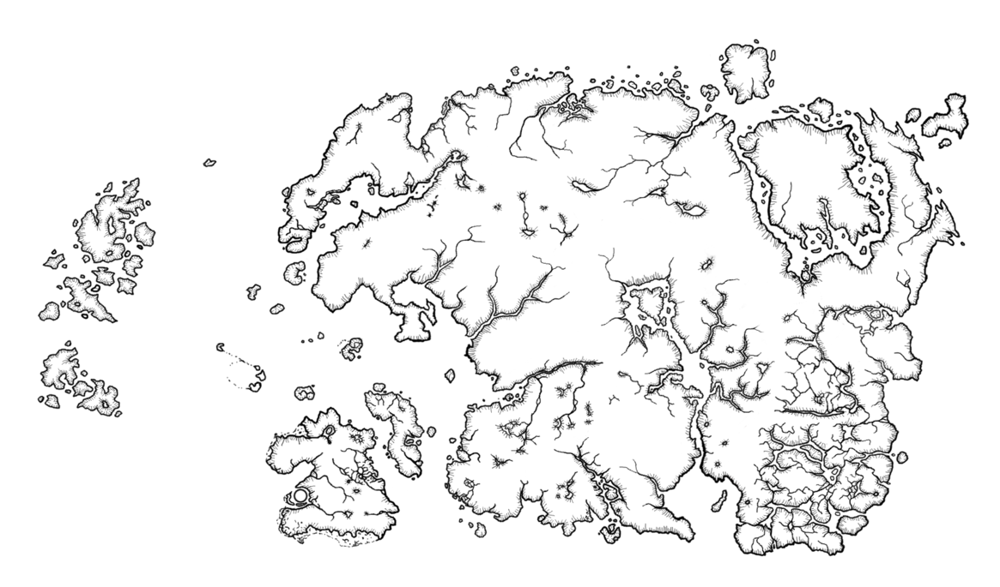

Região de Qasoor
A região de Qasoor é detentora das mais diversificadas vegetações, colinas, rios, praias, montanhas rochosas
e desertos áridos.

Os suditos da região de Qasoor são unidos abaixo da flâmula da igreja de Ecclesia. A
palavra de Deus tem sido disseminada pelos quatro cantos de Qasoor por eras pelos descendentes diretos de
seu
messias. E estes ocupam a posição de Sumo Sacerdote de Ecclesia através das gerações. O Sumo
Sacerdote é absoluto uma vez que a voz deste é o eco mundano da vontade de Deus único e todo poderoso. Os
povos originários de Qasoor foram doutrinados e os que resistiram foram exterminados ou exilados nos
desertos ao sudeste de Qasoor onde lá, são
deixados para morrer de desidratação, fome e doença.

A elite religiosa e os burgueses vivem na capital. Porém, o Sumo Sacerdote reside no imponente Santo palácio
de Ecclesia
construido com proporções abundantes para que assim pudesse ser visto tanto pelos burgueses, quanto pelos
ploretariado. A
capital foi construida
exatamente no centro de Qasoor, para que todos estivessem igualmente próximos de Deus.
Em Qasoor, você encontrará
no seu caminho ruinas de templos erguidos pelos povos originários para adorar aos "Veneráveis" -
entidades cultuadas pelos pagãos de outrora - e neles, terá de superar alguns desafios afim de descobrir
segredos antigos sobre esse antigo culto e seus devotos que à muito foram silenciados em nome do unico
e
verdadeiro
Deus.